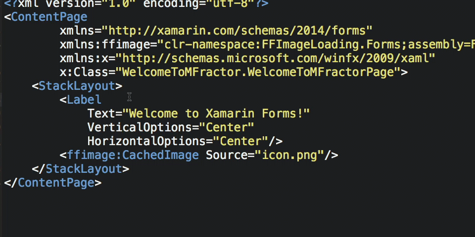

Welcome
Hey there fellow Xamarin developer!
Welcome to the documentation for MFractor, the essential productivity tool for Xamarin Studio.
Have you ever...
- Hit runtime issues so obvious you were scratching your head over why code analysis didn't pick it up?
- Been frustrated by continuously writing the same boilerplate code?
- Felt you're doing a LOT of text searching when a class should just be a keystroke away?
As a seasoned Xamarin developer, these problems bit me many times over the years... And they irked me so much that I started building MFractor to solve these issues.
MFractor gives you several features so you can make great apps faster:
- A comprehensive code analyser turns runtime crashes into in-editor code warnings.
- A code generation engine auto-magically creates boilerplate code in a few clicks instead of a few hundred keystrokes.
- A few dozen of navigation improvements remove the friction of navigating your apps source code.
Slowly, I am building the ReSharper for Xamarin Studio and I'm thrilled that you have joined me on the journey.
If something doesn't work quite right or you'd like a sweet new feature added, be patient and contact me:
- Via Twitter: Give me a holla at @matthewrdev
- Via Slack: Drop in to chat anytime in the #mfractor Xamarin Slack sub-channel.
- Via Email: Shot an email to hello@mfractor.com
Finally, thank you for installing and using MFractor. It means the world to me.
Matthew Robbins - Creator of MFractor. ✌️
Introduction
MFractor is a comprehensive suite of productivity tools for Xamarin Studio to enable developers to make great apps faster.
With MFractor for Xamarin.Forms, you can:
Navigate from Xaml to C# faster with Xaml tooltips, go-to symbol and Mvvm shortcuts.

Write less Xaml bugs with a Xaml analyser detecting code issues at design time... Then fix those issue in just a few clicks.

Generate C# code from Xaml such as binding context properties, commands, bindable properties and much, much more.

With MFractor for Xamarin.Android, you can:
Navigate app resources fluently with resource tooltips, go-to resource declaration and find all reference support.

Quickly create xml resources with IntelliSense for all resource types (not just layouts).

Build bug free layouts and app resources with Android resource analysis.

Avoid Android specific runtime issues with C# code analysis.

In these docs, you'll learn how to install MFractor, use MFractor for Xamarin.Forms and use MFractor for Xamarin.Android. By the end of this documentation you'll be a master at leveraging MFractors feature suite to build great apps faster.
If you run into an issue along the way, support for MFractor is available via the following ways: - Tweet to @matthewrdev at any time on Twitter. - The Xamarin Slack channel has an #mfractor sub-channel. Drop in and chat. - Email hello@mfractor.com to contact support.
Let's get started by Installing MFractor for Xamarin Studio